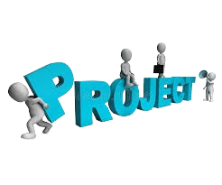

Projects I Built
🔹 Quiz application (RESTful APIs, Spring Boot, PostgreSQL)
🔹 Banking Management System (Spring Boot, RESTful APIs, MySQL, Lombok)
🔹 Journal application APIs (Spring Boot, RESTful APIs, MongoDB, Spring Security)
🔹 Blinkit Clone App (Front-End)
🔹 Real-Time Video & Chat App (MERN, WebRTC, Socket.io)
